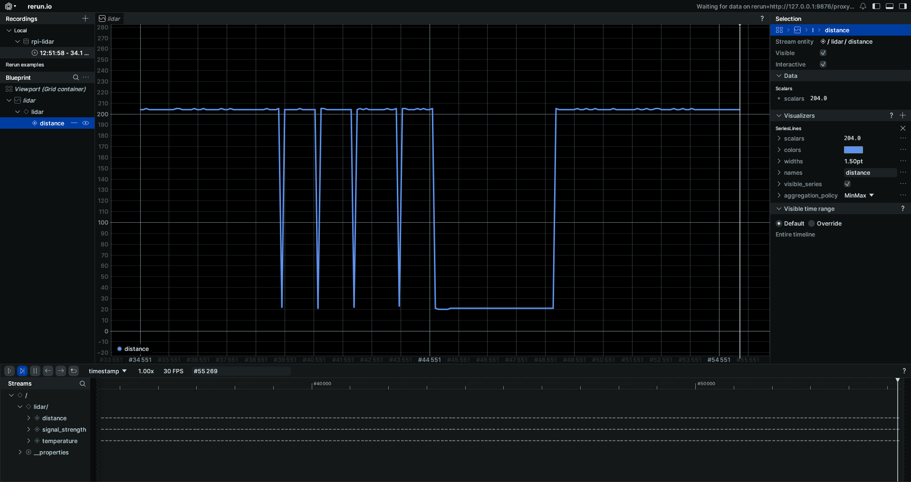

Measuring distance with a TF-Luna LiDAR and a Raspberry Pi
Anes Benmerzoug ![]()
Raspberry Pi, TF-Luna, LiDAR, Time of Flight, Rust, Rerun
After publishing the original version of the post, I realized that the user manual I was using was out-of-date and that there was a newer one available on the Benewake website.
I have updated the post to reflect this.
The full code for this project/experiment can be found in the following repository: rpi-tfluna-lidar
I recently learned Rust and was looking to put it into practice by working on some cool side-projects. Since I work as an AI Engineer and have developed my fair share of chatbots, I first developed PincerChat a few months ago, a desktop GUI for interacting with local LLMs served with Ollama. Looking back at it, I realize that I tried to chew more than I could swallow but nevertheless I learned a lot making it.
I then decided to try something simpler and at the same time get back into embedded systems and micro-controller development. During my master’s studies for Control Engineering in Algeria, a group of friends and I had our own team, called OTO which is a homonym for Auto. an abbreviation for Automatique (Automation in French), that built many different embedded projects like a ball and beam system, a ball and plate system and a persistence of vision (PoV) display.
Before starting, I had to get some hardware. Luckily for me, I had a Raspberry Pi 3 model B laying around that I was using as a Pi-Hole before moving into my current apartment and while browsing through AliExpress I stumbled upon the TF-Luna LiDAR, a low cost LiDAR sensor and thought that I could use it to make a mobile robot that maps and navigates autonomously.
Unfortunately for me, once I received the TF-Luna and read its user manual I quickly realized that it is 1D LiDAR, i.e. that it only measures the distance to a single point, instead of being a 2D (distance and angle) or 3D (3D distance) LiDAR.
This is fine for a start, especially since I’m getting back into embedded systems after a long time but I will hopefully buy a better sensor in the future.
TF-Luna and distance measurements with LiDARS
The TF-Luna is a low-cost LiDAR distance sensor made by Benewake, a LiDAR manufacturer based in Beijing, China.
LiDAR is an acronym of “Light Detection And Ranging”. It is a method for determining distances by targeting an object or a surface with a laser and measuring the time for the reflected light to return to the receiver. It is commonly used for creating detailed 3D maps and is effective in various applications, including autonomous vehicles and environmental monitoring.
A LiDAR determines the distance of an object or a surface with the formula:
\[ D = \frac{c \cdot t}{2} \]
where D is the distance between the sensor and the object or surface being measured, c is the speed of light, and t is the time spent for the laser light to travel to the object or surface being detected, then travel back to the sensor.
The TF-Luna however does not send a single pulse at a time, but rather periodically emits near infrared modulated waves and calculates the time by measuring the phase difference between the original wave and the reflected wave and uses that time to compute the relative distance of the object at which it is pointed.
\[ D = \frac{c}{2} \cdot \frac{1}{2\pi f} \cdot \Delta\varphi \]
where D is the distance between the sensor and the object or surface being measured, c is the speed of light, and f is the frequency of the emitted signal, and \(\Delta\varphi\) is the phase difference between emitted and received signal.
The device’s specifications can be seen in Table 1.
Raspberry Pi and TF-Luna
I wired the TF-Luna to the Raspberry Pi as shown in Figure 1 and Table 2.

| TF-Luna Pin | Raspberry Pi Pin |
|---|---|
| Pin 1 (+3.7-5.2V) | Pin 2 (5V) |
| Pin 2 (RXD/SDA) | Pin 3 (GPIO 2 / SDA) |
| Pin 3 (TXD/SCL) | Pin 5 (GPIO 3 / SCL) |
| Pin 4 (Gnd) | Pin 6 (Gnd) |
| Pin 5 (I2C Enable) | Pin 9 (Gnd) |
| Pin 6 (Data Signal) | Not connected / used |
The TF-Luna supports both Serial (UART) and I2C for communication. I decided to use I2C because I am planning to use more sensors and it allows multiplexing whereas UART is just used for point-to-point communication.
In order to enable I2C mode, we need to connect the TF-Luna’s 5th pin (I2C Enable) to ground.
If you’re interested in using UART, please read this post instead Distance Detection with the TF-Luna LiDAR and Raspberry Pi - MakerPortal.
Since there was, as of writing this post, no existing crate on crates.io for interacting with the TF-Luna, I had to write the code for that myself. Luckily for me, it turned out to be pretty straightforward thanks to the rppal crate as well as these two sources:
- The TF-Luna user manual.
- The TFLuna-I2C Arduino library by budryerson.
Once the wiring was done and the rppal crate added, all I had to do was figure out the correct register addresses from the user manual for reading the sensor measurements. This task should have been easy but it was made hard by the structure of the manual itself. Most of the pages are about the UART protocol and the different output format and only a few are about I2C and the registers.
I struggled at first to read measurements from the TF-Luna. I kept reading constant values no matter what I did ever I wrote 0 to the 0x25 register to enable it. It only worked after I decided randomly to try writing 1 instead. After investigating for a bit, I realized that I was using an older version of the user manual (A03 from 2020.3.15) instead of the newer version (A05 from 2020.7.23).
In this newer version, the definition of I2C register 0x25 was changed so that to enable (respectively disable) the LiDAR sensor we have to set the 0x25 register to 1 (respectively 0) instead of 0 (respectively 1), see Figure 2.
A03 showing values that were changed in version A05
Raspberry Pi and Rust
The Raspberry Pi 3 model B is not the most powerful computer there is and compiling the code on it could actually take too long, that’s why we cross-compile it on a separate, more powerful computer and then transfer the binary to it.
If you want to learn more about cross-compilation in general or specifically about cross-compilation for the Raspberry Pi, you should refer to the following links:
The gist of it is to:
Install the rustup target for the Raspberry Pi 3:
rustup target add aarch64-unknown-linux-gnuNoteThe target may be different if you have a different Raspberry Pi model.
Install the cross-compiler (on Ubuntu, in this case):
sudo apt-get install gcc-multilib-arm-linux-gnueabihfCompile the code with the new install target:
cargo build --target aarch64-unknown-linux-gnuFor the sake of simplicity, you should define this configuration inside
.cargo/config.tomlto avoid having to constantly pass the argument:[target.aarch64-unknown-linux-gnu] linker = "aarch64-linux-gnu-gcc" [build] target = "aarch64-unknown-linux-gnu"
Once that’s done, then we have to copy the binary over to the Raspberry Pi and then execute it.
scp target/aarch64-unknown-linux-gnu/release/main raspberrypi:~Projects/mainssh raspberrypi ~/Projects/mainIn my repository, all of this can be done by simply calling cargo run.
Data Collection and Visualization
For the data collection and visualization, we will use rerun which is an open-source log handling and visualization for spatial and embodied AI. The demos shown on their website definitely seem interesting.
To use it we first start by adding the rerun crate as a dependency:
cargo add rerunIt has quite a lot of features and will increase the size of the final binary, but I didn’t bother for now to go through them and determine which ones are absolutely necessary and which ones are not.
reruncargo run --releaseI put the TF-Luna LiDAR on a table and pointed it at the ceiling, so the initial measurements are of the distance from the table to the ceiling which is about 2 meters (~200 cm).
I then moved my hand, relatively quickly, in front of it 4 times and that can be seen as the 4 shorts dips to a distance of about 21 centimeters. After that, I put my hand in front of it and left it there for a few seconds. I finally moved my hand away.
A 10Hz sampling frequency is not enough to detect fast movements, but it is more than enough for indoor autonomous navigation.

Conclusion
Thanks to this projects, I have learned about using Rust on a Raspberry Pi and about dealing with not so intuitive sensor documents. It felt nice getting back into making projects like this after such a long time. It only took me a few days to get it working. It actually took me more time to write this post than to write the code itself.
As a next step, I would like to mount the TF-Luna on something that can be rotated with a servo or stepper motor in order to change the angle and be able to generate a 2D point cloud.
I have also decided to make a crate for interacting with the TF-Luna sensor (ideally with both async and embedded-hal support) hoping that it will be useful to others as well.
Footnotes
Operating range measured indoor based on a standard whiteboard with 90% reflectivity.↩︎
This is the theoretical value, the real value may be different.↩︎
This is the theoretical value, the real value may be different.↩︎
100Hz is the default value and only any factor (500/n, n can be any integer in [2, 500] e.g. 250Hz, 125Hz) of 500Hz are available.↩︎
Taken from the TF-Luna’s product page.↩︎
Taken from the TF-Luna’s product page.↩︎
Taken from the TF-Luna’s product page.↩︎
The choice between the two is made based on how the 5th pin is connected. Ground for I2C and 3.3V for UART.↩︎